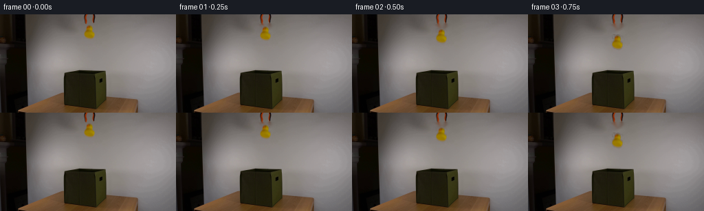
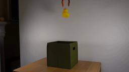
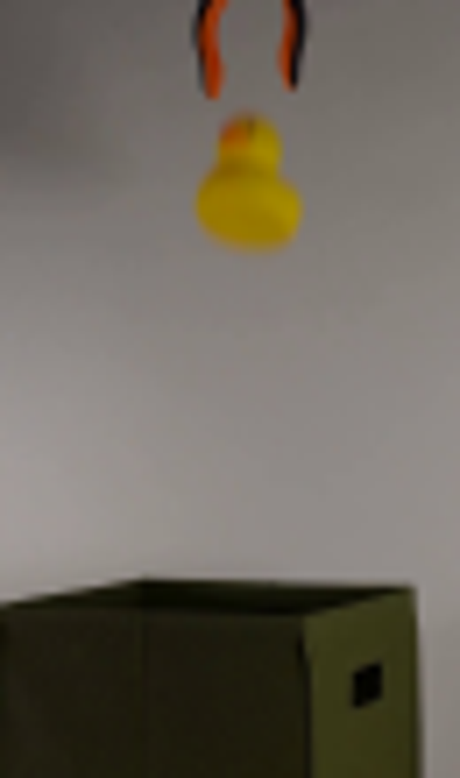
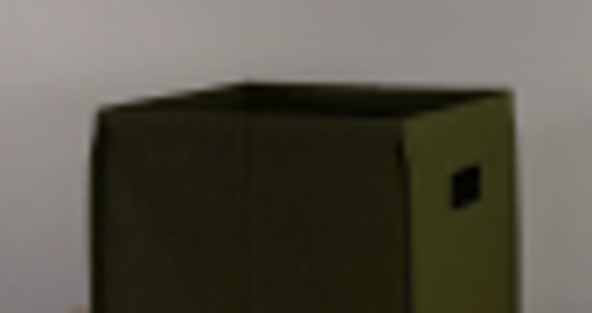
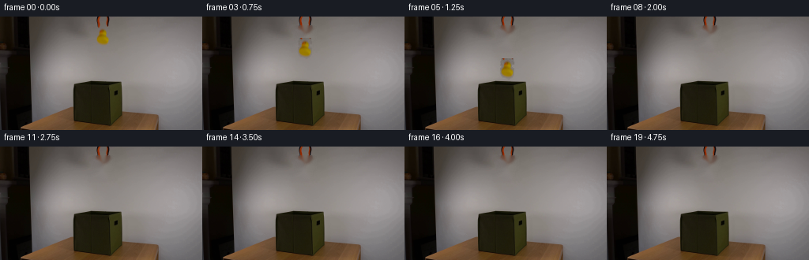
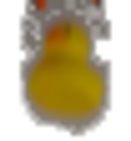
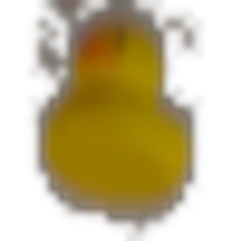
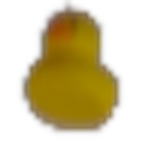
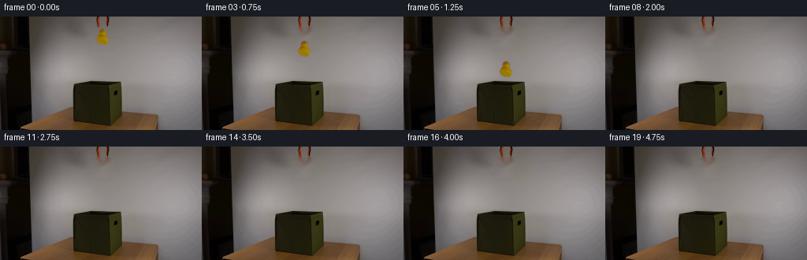
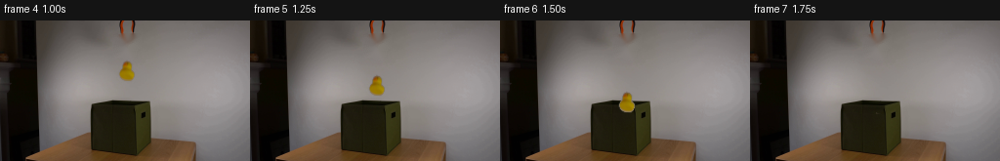

CODING AGENTS AS PIXEL WORLD MODELS
traex/GPT-5.6-Sol · 0060
点击播放 · 原生 RGB 像素
逐轮保存的候选
回放视频、检查图与代码变化。
每份候选均可单独播放。实际图片检查记录在下方工具轨迹中。
候选 01播放与检查图
点击播放 · 原生 RGB 像素

展开代码变化
--- 上一保存版本
+++ 本次保存版本
@@ -0,0 +1,139 @@
+#!/usr/bin/env python3
+"""Generate the fixed-camera rubber-duck drop sequence."""
+from pathlib import Path
+import cv2
+import numpy as np
+from PIL import Image
+import artifact_io
+
+HERE = Path(__file__).resolve().parent
+
+
+def smoothstep(a, b, x):
+ x = np.clip((x - a) / (b - a), 0.0, 1.0)
+ return x * x * (3.0 - 2.0 * x)
+
+
+def make_clean_plate(src):
+ """Remove the duck while retaining the untouched grabber and smooth wall."""
+ hsv = cv2.cvtColor(src, cv2.COLOR_RGB2HSV)
+ # The crop contains the only saturated yellow/orange item below the jaws.
+ chroma = hsv[:, :, 1]
+ yy, xx = np.mgrid[:src.shape[0], :src.shape[1]]
+ duck_zone = (xx >= 118) & (xx <= 142) & (yy >= 13) & (yy <= 39)
+ mask = ((chroma > 22) & duck_zone).astype(np.uint8) * 255
+ mask = cv2.dilate(mask, cv2.getStructuringElement(cv2.MORPH_ELLIPSE, (5, 5)))
+ # TELEA produces a natural interpolation of this softly lit, nearly neutral wall.
+ clean = cv2.inpaint(cv2.cvtColor(src, cv2.COLOR_RGB2BGR), mask, 4, cv2.INPAINT_TELEA)
+ return cv2.cvtColor(clean, cv2.COLOR_BGR2RGB), mask
+
+
+def extract_duck(src):
+ """Extract the photographed duck, including its original antialiased edge."""
+ x0, y0, x1, y1 = 117, 12, 143, 40
+ rgb = src[y0:y1, x0:x1].copy()
+ hsv = cv2.cvtColor(rgb, cv2.COLOR_RGB2HSV)
+ sat = hsv[:, :, 1].astype(np.float32)
+ val = hsv[:, :, 2].astype(np.float32)
+ # Wall is essentially achromatic; saturation therefore gives a robust matte.
+ core = ((sat > 25) & (val > 45)).astype(np.uint8)
+ n, labels, stats, centers = cv2.connectedComponentsWithStats(core, 8)
+ if n > 1:
+ target = 1 + np.argmax(stats[1:, cv2.CC_STAT_AREA])
+ core = (labels == target).astype(np.uint8)
+ expanded = cv2.dilate(core, np.ones((3, 3), np.uint8), iterations=1)
+ # Include the camera's soft one-pixel fringe but no rectangular crop background.
+ alpha_sat = smoothstep(7.0, 33.0, sat)
+ alpha = np.maximum(core.astype(np.float32), alpha_sat * expanded)
+ alpha = cv2.GaussianBlur(alpha, (0, 0), 0.42)
+ alpha *= expanded
+ alpha = np.clip(alpha, 0.0, 1.0)
+ return rgb, alpha, (x0, y0)
+
+
+def transformed_sprite(rgb, alpha, angle):
+ h, w = alpha.shape
+ center = ((w - 1) * 0.5, (h - 1) * 0.5)
+ M = cv2.getRotationMatrix2D(center, angle, 1.0)
+ wrgb = cv2.warpAffine(rgb, M, (w, h), flags=cv2.INTER_CUBIC,
+ borderMode=cv2.BORDER_REPLICATE)
+ wa = cv2.warpAffine(alpha, M, (w, h), flags=cv2.INTER_CUBIC,
+ borderMode=cv2.BORDER_CONSTANT, borderValue=0)
+ return np.clip(wrgb, 0, 255).astype(np.float32), np.clip(wa, 0, 1)
+
+
+def composite(frame, rgb, alpha, left, top, clip_at_box=False):
+ """Alpha composite, optionally letting the front rim occlude the falling duck."""
+ h, w = alpha.shape
+ H, W = frame.shape[:2]
+ x0, y0 = max(0, left), max(0, top)
+ x1, y1 = min(W, left + w), min(H, top + h)
+ if x1 <= x0 or y1 <= y0:
+ return
+ sx0, sy0 = x0 - left, y0 - top
+ a = alpha[sy0:sy0 + y1-y0, sx0:sx0 + x1-x0].copy()
+ if clip_at_box:
+ ys, xs = np.mgrid[y0:y1, x0:x1]
+ # Top edge of the box's near wall: from (93,91) to (139,96), then
+ # very slightly upward along the right panel. Anything below it is inside.
+ rim = np.where(xs <= 139, 91.0 + (xs - 93.0) * (5.0 / 46.0),
+ 96.0 - (xs - 139.0) * 0.18)
+ # A narrow, soft edge matches the source camera focus.
+ occ = np.clip((rim - ys + 0.45) / 1.15, 0.0, 1.0)
+ a *= occ.astype(np.float32)
+ if not np.any(a > 0.001):
+ return
+ a3 = a[:, :, None]
+ region = frame[y0:y1, x0:x1].astype(np.float32)
+ fg = rgb[sy0:sy0 + y1-y0, sx0:sx0 + x1-x0]
+ frame[y0:y1, x0:x1] = np.clip(fg * a3 + region * (1.0-a3), 0, 255).astype(np.uint8)
+
+
+def add_approach_shadow(frame, center_y):
+ """Subtle soft shadow inside the opening as the duck nears it."""
+ strength = float(smoothstep(50.0, 88.0, center_y)) * 0.13
+ if strength <= 0:
+ return
+ yy, xx = np.mgrid[:144, :256]
+ aperture = np.zeros((144, 256), np.uint8)
+ cv2.fillConvexPoly(aperture, np.array([[94,87],[137,82],[153,85],[139,96],[94,92]], np.int32), 1)
+ g = np.exp(-(((xx-130.0)/15.0)**2 + ((yy-89.0)/4.0)**2) * 1.4)
+ shade = 1.0 - strength * g * aperture
+ frame[:] = np.clip(frame.astype(np.float32) * shade[:, :, None], 0, 255).astype(np.uint8)
+
+
+def generate():
+ src = np.asarray(Image.open(HERE / "first_frame.png").convert("RGB"), dtype=np.uint8)
+ assert src.shape == (144, 256, 3)
+ clean, _ = make_clean_plate(src)
+ duck_rgb, duck_a, origin = extract_duck(src)
+
+ frames = []
+ # Source sprite center, retained exactly at t=0.
+ source_center = np.array([origin[0] + (duck_a.shape[1]-1)/2,
+ origin[1] + (duck_a.shape[0]-1)/2], dtype=float)
+ for i in range(20):
+ if i == 0:
+ frames.append(src.copy()) # contract: bit-identical first frame
+ continue
+ t = i / 4.0
+ # A clean physical free fall: roughly 52 image pixels/s^2. Tiny lateral
+ # drift and rotation suggest a naturally released lightweight rubber duck.
+ cx = source_center[0] + 0.48*np.sin(1.55*t)
+ cy = source_center[1] + 0.5*52.0*t*t
+ angle = -1.8*np.sin(1.65*t)
+
+ frame = clean.copy()
+ add_approach_shadow(frame, cy)
+ if cy - duck_a.shape[0]/2 < 98:
+ wrgb, wa = transformed_sprite(duck_rgb, duck_a, angle)
+ left = int(round(cx - (wa.shape[1]-1)/2))
+ top = int(round(cy - (wa.shape[0]-1)/2))
+ composite(frame, wrgb, wa, left, top, clip_at_box=(cy > 69))
+ frames.append(frame)
+
+ return np.stack(frames).astype(np.uint8)
+
+
+if __name__ == "__main__":
+ artifact_io.save(generate(), HERE)
候选 02播放与检查图
点击播放 · 原生 RGB 像素

展开代码变化
--- 上一保存版本
+++ 本次保存版本
@@ -20,7 +20,7 @@
# The crop contains the only saturated yellow/orange item below the jaws.
chroma = hsv[:, :, 1]
yy, xx = np.mgrid[:src.shape[0], :src.shape[1]]
- duck_zone = (xx >= 118) & (xx <= 142) & (yy >= 13) & (yy <= 39)
+ duck_zone = (xx >= 118) & (xx <= 142) & (yy >= 15) & (yy <= 39)
mask = ((chroma > 22) & duck_zone).astype(np.uint8) * 255
mask = cv2.dilate(mask, cv2.getStructuringElement(cv2.MORPH_ELLIPSE, (5, 5)))
# TELEA produces a natural interpolation of this softly lit, nearly neutral wall.
@@ -30,7 +30,9 @@
def extract_duck(src):
"""Extract the photographed duck, including its original antialiased edge."""
- x0, y0, x1, y1 = 117, 12, 143, 40
+ # Start below the jaw tips, so no orange part of the grabber can leak into
+ # the moving sprite.
+ x0, y0, x1, y1 = 118, 14, 142, 39
rgb = src[y0:y1, x0:x1].copy()
hsv = cv2.cvtColor(rgb, cv2.COLOR_RGB2HSV)
sat = hsv[:, :, 1].astype(np.float32)
@@ -42,10 +44,12 @@
target = 1 + np.argmax(stats[1:, cv2.CC_STAT_AREA])
core = (labels == target).astype(np.uint8)
expanded = cv2.dilate(core, np.ones((3, 3), np.uint8), iterations=1)
- # Include the camera's soft one-pixel fringe but no rectangular crop background.
- alpha_sat = smoothstep(7.0, 33.0, sat)
- alpha = np.maximum(core.astype(np.float32), alpha_sat * expanded)
- alpha = cv2.GaussianBlur(alpha, (0, 0), 0.42)
+ # Saturation captures the colored antialiased edge. The soft core matte
+ # closes any tiny low-saturation holes in the yellow body. A relatively
+ # high lower threshold is important: it excludes neutral wall pixels.
+ alpha_sat = smoothstep(18.0, 42.0, sat) * expanded
+ alpha_core = cv2.GaussianBlur(core.astype(np.float32), (0, 0), 0.55)
+ alpha = np.maximum(alpha_core, alpha_sat)
alpha *= expanded
alpha = np.clip(alpha, 0.0, 1.0)
return rgb, alpha, (x0, y0)
候选 03播放与检查图
点击播放 · 原生 RGB 像素

展开代码变化
--- 上一保存版本
+++ 本次保存版本
@@ -37,8 +37,10 @@
hsv = cv2.cvtColor(rgb, cv2.COLOR_RGB2HSV)
sat = hsv[:, :, 1].astype(np.float32)
val = hsv[:, :, 2].astype(np.float32)
- # Wall is essentially achromatic; saturation therefore gives a robust matte.
- core = ((sat > 25) & (val > 45)).astype(np.uint8)
+ # Wall has mild warm saturation, but the photographed duck is strongly
+ # yellow/orange. Hue plus a strong saturation cutoff separates them cleanly.
+ hue = hsv[:, :, 0].astype(np.float32)
+ core = ((sat > 65) & (val > 45) & (hue < 40)).astype(np.uint8)
n, labels, stats, centers = cv2.connectedComponentsWithStats(core, 8)
if n > 1:
target = 1 + np.argmax(stats[1:, cv2.CC_STAT_AREA])
@@ -47,7 +49,7 @@
# Saturation captures the colored antialiased edge. The soft core matte
# closes any tiny low-saturation holes in the yellow body. A relatively
# high lower threshold is important: it excludes neutral wall pixels.
- alpha_sat = smoothstep(18.0, 42.0, sat) * expanded
+ alpha_sat = smoothstep(35.0, 95.0, sat) * expanded * (hue < 42)
alpha_core = cv2.GaussianBlur(core.astype(np.float32), (0, 0), 0.55)
alpha = np.maximum(alpha_core, alpha_sat)
alpha *= expanded
可观测工具轨迹
实际执行的命令与返回图片。
命令 1exit 0
/bin/bash -lc "cat prompt.txt && printf '\\n---RULES---\\n' && cat GENERATION_RULES.md"
命令 2exit 0
/bin/bash -lc "find . -maxdepth 2 -type f -printf '%p\\n' | sort && printf '\\n--- tools ---\\n' && command -v ffmpeg || true && command -v python3 || true"
命令 3exit 0
/bin/bash -lc "sed -n '1,240p' artifact_io.py && python3 - <<'PY'
try:
import PIL; print('PIL',PIL.__version__)
except Exception as e: print(e)
try:
import cv2; print('cv2',cv2.__version__)
except Exception as e: print(e)
try:
import numpy; print('numpy',numpy.__version__)
except Exception as e: print(e)
PY"命令 4exit 0
/bin/bash -lc "python3 - <<'PY'
from PIL import Image
im=Image.open('first_frame.png')
im.crop((95,0,160,110)).resize((520,880)).save('.tmp/crop.png')
PY"命令 5exit 0
/bin/bash -lc "python3 - <<'PY'
from PIL import Image
import numpy as np, cv2
im=np.array(Image.open('first_frame.png').convert('RGB'))
for y in range(14,39):
s=''
for x in range(116,145):
r,g,b=im[y,x]; d=int(max(r,g,b)-min(r,g,b))
s += '#' if r>100 and r>g*1.15 and g>b*1.5 else ('Y' if r>100 and g>70 and b<60 else ('o' if d>35 else '.'))
print(f'{y:02}',s)
PY"命令 6exit 0
/bin/bash -lc "python3 - <<'PY'
from PIL import Image
im=Image.open('first_frame.png')
im.crop((80,70,165,115)).resize((1020,540)).save('.tmp/box.png')
PY"命令 7exit 0
/bin/bash -lc "cat > generate.py <<'PY'
#"'!/usr/bin/env python3
"""Generate the fixed-camera rubber-duck drop sequence."""
from pathlib import Path
import cv2
import numpy as np
from PIL import Image
import artifact_io
HERE = Path(__file__).resolve().parent
def smoothstep(a, b, x):
x = np.clip((x - a) / (b - a), 0.0, 1.0)
return x * x * (3.0 - 2.0 * x)
def make_clean_plate(src):
"""Remove the duck while retaining the untouched grabber and smooth wall."""
hsv = cv2.cvtColor(src, cv2.COLOR_RGB2HSV)
# The crop contains the only saturated yellow/orange item below the jaws.
chroma = hsv[:, :, 1]
yy, xx = np.mgrid[:src.shape[0], :src.shape[1]]
duck_zone = (xx >= 118) & (xx <= 142) & (yy >= 13) & (yy <= 39)
mask = ((chroma > 22) & duck_zone).astype(np.uint8) * 255
mask = cv2.dilate(mask, cv2.getStructuringElement(cv2.MORPH_ELLIPSE, (5, 5)))
# TELEA produces a natural interpolation of this softly lit, nearly neutral wall.
clean = cv2.inpaint(cv2.cvtColor(src, cv2.COLOR_RGB2BGR), mask, 4, cv2.INPAINT_TELEA)
return cv2.cvtColor(clean, cv2.COLOR_BGR2RGB), mask
def extract_duck(src):
"""Extract the photographed duck, including its original antialiased edge."""
x0, y0, x1, y1 = 117, 12, 143, 40
rgb = src[y0:y1, x0:x1].copy()
hsv = cv2.cvtColor(rgb, cv2.COLOR_RGB2HSV)
sat = hsv[:, :, 1].astype(np.float32)
val = hsv[:, :, 2].astype(np.float32)
# Wall is essentially achromatic; saturation therefore gives a robust matte.
core = ((sat > 25) & (val > 45)).astype(np.uint8)
n, labels, stats, centers = cv2.connectedComponentsWithStats(core, 8)
if n > 1:
target = 1 + np.argmax(stats[1:, cv2.CC_STAT_AREA])
core = (labels == target).astype(np.uint8)
expanded = cv2.dilate(core, np.ones((3, 3), np.uint8), iterations=1)
# Include the camera'"'s soft one-pixel fringe but no rectangular crop background.
alpha_sat = smoothstep(7.0, 33.0, sat)
alpha = np.maximum(core.astype(np.float32), alpha_sat * expanded)
alpha = cv2.GaussianBlur(alpha, (0, 0), 0.42)
alpha *= expanded
alpha = np.clip(alpha, 0.0, 1.0)
return rgb, alpha, (x0, y0)
def transformed_sprite(rgb, alpha, angle):
h, w = alpha.shape
center = ((w - 1) * 0.5, (h - 1) * 0.5)
M = cv2.getRotationMatrix2D(center, angle, 1.0)
wrgb = cv2.warpAffine(rgb, M, (w, h), flags=cv2.INTER_CUBIC,
borderMode=cv2.BORDER_REPLICATE)
wa = cv2.warpAffine(alpha, M, (w, h), flags=cv2.INTER_CUBIC,
borderMode=cv2.BORDER_CONSTANT, borderValue=0)
return np.clip(wrgb, 0, 255).astype(np.float32), np.clip(wa, 0, 1)
def composite(frame, rgb, alpha, left, top, clip_at_box=False):
\"\"\"Alpha composite, optionally letting the front rim occlude the falling duck.\"\"\"
h, w = alpha.shape
H, W = frame.shape[:2]
x0, y0 = max(0, left), max(0, top)
x1, y1 = min(W, left + w), min(H, top + h)
if x1 <= x0 or y1 <= y0:
return
sx0, sy0 = x0 - left, y0 - top
a = alpha[sy0:sy0 + y1-y0, sx0:sx0 + x1-x0].copy()
if clip_at_box:
ys, xs = np.mgrid[y0:y1, x0:x1]
# Top edge of the box's near wall: from (93,91) to (139,96), then
# very slightly upward along the right panel. Anything below it is inside.
rim = np.where(xs <= 139, 91.0 + (xs - 93.0) * (5.0 / 46.0),
96.0 - (xs - 139.0) * 0.18)
# A narrow, soft edge matches the source camera focus.
occ = np.clip((rim - ys + 0.45) / 1.15, 0.0, 1.0)
a *= occ.astype(np.float32)
if not np.any(a > 0.001):
return
a3 = a[:, :, None]
region = frame[y0:y1, x0:x1].astype(np.float32)
fg = rgb[sy0:sy0 + y1-y0, sx0:sx0 + x1-x0]
frame[y0:y1, x0:x1] = np.clip(fg * a3 + region * (1.0-a3), 0, 255).astype(np.uint8)
def add_approach_shadow(frame, center_y):
\"\"\"Subtle soft shadow inside the opening as the duck nears it.\"\"\"
strength = float(smoothstep(50.0, 88.0, center_y)) * 0.13
if strength <= 0:
return
yy, xx = np.mgrid[:144, :256]
aperture = np.zeros((144, 256), np.uint8)
cv2.fillConvexPoly(aperture, np.array([[94,87],[137,82],[153,85],[139,96],[94,92]], np.int32), 1)
g = np.exp(-(((xx-130.0)/15.0)**2 + ((yy-89.0)/4.0)**2) * 1.4)
shade = 1.0 - strength * g * aperture
frame[:] = np.clip(frame.astype(np.float32) * shade[:, :, None], 0, 255).astype(np.uint8)
def generate():
src = np.asarray(Image.open(HERE / \"first_frame.png\").convert(\"RGB\"), dtype=np.uint8)
assert src.shape == (144, 256, 3)
clean, _ = make_clean_plate(src)
duck_rgb, duck_a, origin = extract_duck(src)
frames = []
# Source sprite center, retained exactly at t=0.
source_center = np.array([origin[0] + (duck_a.shape[1]-1)/2,
origin[1] + (duck_a.shape[0]-1)/2], dtype=float)
for i in range(20):
if i == 0:
frames.append(src.copy()) # contract: bit-identical first frame
continue
t = i / 4.0
# A clean physical free fall: roughly 52 image pixels/s"'^2. Tiny lateral
# drift and rotation suggest a naturally released lightweight rubber duck.
cx = source_center[0] + 0.48*np.sin(1.55*t)
cy = source_center[1] + 0.5*52.0*t*t
angle = -1.8*np.sin(1.65*t)
frame = clean.copy()
add_approach_shadow(frame, cy)
if cy - duck_a.shape[0]/2 < 98:
wrgb, wa = transformed_sprite(duck_rgb, duck_a, angle)
left = int(round(cx - (wa.shape[1]-1)/2))
top = int(round(cy - (wa.shape[0]-1)/2))
composite(frame, wrgb, wa, left, top, clip_at_box=(cy > 69))
frames.append(frame)
return np.stack(frames).astype(np.uint8)
if __name__ == "__main__":
artifact_io.save(generate(), HERE)
PY
python3 generate.py
python3 - <<'"'PY'
from PIL import Image
import numpy as np
im=np.array(Image.open('first_frame.png').convert('RGB'))
f=np.array(Image.open('frames/00.png').convert('RGB'))
print('frame0 identical:',np.array_equal(im,f),'maxdiff',np.abs(im.astype(int)-f.astype(int)).max())
z=np.load('pixels.npz')['pixels'];print('packed',z.shape,z.dtype)
PY"命令 8exit 0
/bin/bash -lc "python3 - <<'PY'
from generate import *
from PIL import Image
import numpy as np
s=np.array(Image.open('first_frame.png').convert('RGB')); rgb,a,o=extract_duck(s)
out=np.zeros((*a.shape,4),np.uint8);out[:,:,:3]=rgb;out[:,:,3]=(a*255).astype('u1');Image.fromarray(out).resize((260,280)).save('.tmp/sprite.png')
print(o, np.where(a>.1)[0].min(),np.where(a>.1)[0].max(),np.where(a>.1)[1].min(),np.where(a>.1)[1].max())
PY"命令 9exit 0
/bin/bash -lc "python3 generate.py && python3 - <<'PY'
from generate import *
from PIL import Image
import numpy as np
s=np.array(Image.open('first_frame.png').convert('RGB')); rgb,a,o=extract_duck(s)
out=np.zeros((*a.shape,4),np.uint8);out[:,:,:3]=rgb;out[:,:,3]=(a*255).astype('u1');Image.fromarray(out).resize((288,300)).save('.tmp/sprite2.png')
print(o, a.shape, a.max(), np.sum(a>.1))
PY"命令 10exit 0
/bin/bash -lc "python3 - <<'PY'
import numpy as np
from PIL import Image
im=np.array(Image.open('first_frame.png').convert('RGB'))
# inspect around edge manually saturation rows cols
hsv=__import__('cv2').cvtColor(im,__import__('cv2').COLOR_RGB2HSV)
for y in range(14,39):
xs=np.where(hsv[y,:,1]>20)[0]
xs=xs[(xs>=115)&(xs<=145)]
if len(xs): print(y,xs.min(),xs.max(),[(int(x),int(hsv[y,x,1])) for x in xs])
PY"命令 11exit 0
/bin/bash -lc "python3 generate.py && python3 - <<'PY'
from generate import *
from PIL import Image
import numpy as np
s=np.array(Image.open('first_frame.png').convert('RGB')); rgb,a,o=extract_duck(s)
out=np.zeros((*a.shape,4),np.uint8);out[:,:,:3]=rgb;out[:,:,3]=(a*255).astype('u1');Image.fromarray(out).resize((288,300)).save('.tmp/sprite3.png')
print('alpha pixels',np.sum(a>.1), 'f0',np.array_equal(s,np.array(Image.open('frames/00.png'))))
PY"命令 12exit 0
/bin/bash -lc "python3 - <<'PY'
from PIL import Image,ImageDraw
ims=[Image.open(f'frames/{i:02}.png') for i in range(4,8)]
out=Image.new('RGB',(256*4,165),(20,20,20));d=ImageDraw.Draw(out)
for j,(i,im) in enumerate(zip(range(4,8),ims)):
d.text((j*256+4,3),f'frame {i} {i/4:.2f}s',fill='white');out.paste(im,(j*256,21))
out.save('.tmp/entry.png')
PY"视觉工具实际返回图片 1

视觉工具实际返回图片 2

视觉工具实际返回图片 3

视觉工具实际返回图片 4

视觉工具实际返回图片 5

视觉工具实际返回图片 6

视觉工具实际返回图片 7

视觉工具实际返回图片 8

视觉工具实际返回图片 9

视觉工具实际返回图片 10

保存候选 3 份；完成命令 12 次；可验证图片返回 10 张。原始 API 响应与完整日志保留在本地。